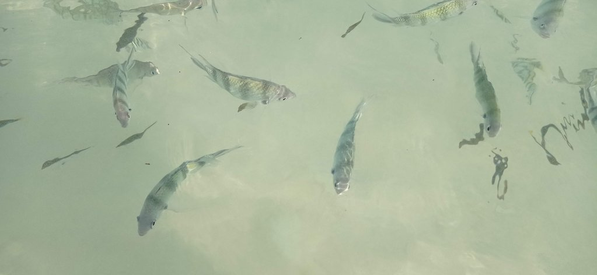
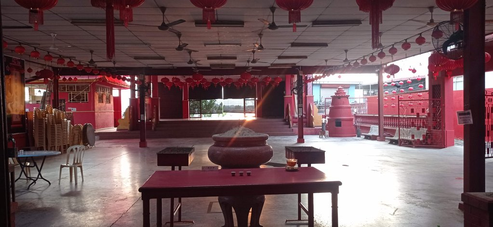

/ Adieu Kapas
8h00 réveil
8h30 petit déjeuner au Coral Beach (le restaurant de l’hôtel voisin)
9h00 baignade pour profiter jusqu’au bout

11h30 dépot des clés et petites gaufres au chocolat sur la plage en attendant notre bateau.
12h30 Bateau pour Marang
13h30 Grab pour Kuala Terranganu. L’hôtel du jour précédent est devenu trop cher, nous en trouvons un autre. On achète les tickets de bus du lendemain à la gare routière. Passage par le marché, achat de 1kg de rambutans que l’on mange face à la rivière. Petit café vietnamien dans la rue chinoise pour se rafraichir.
16h00 retour hôtel, sieste, carnet, billard

19h00 direction Chinatown en passant par un petit temple en bord de rivière. Nous retournons évidemment manger chez Oncle Heng das le grand hangar pour diner.
Retour hôtel, partie de billard en famille.